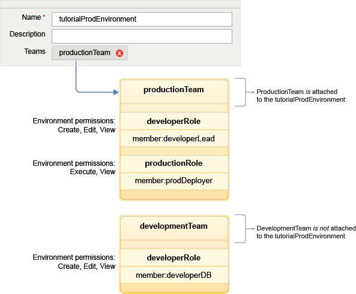

Managing security
HCL® UrbanCode™ Deploy uses a flexible team-based and role-based security model that maps to your organizational structure.
From a high level, the security system for the server consists of an authentication realm, authorization realm, roles, and teams. The authentication realm verifies the identity of the user or system that is trying to log on to the HCL UrbanCode Deploy server. The authorization realm manages user groups. Roles manage permissions. Teams join users with roles and specify which objects the team can access.
The blueprint design server has a separate layer of security.
Permissions
HCL UrbanCode Deploy uses the term permission in a way that is familiar to most readers: each permission controls access to a product area or product function. Most permissions refer to typical activities such as creating, reading, updating, and deleting. Separate permissions are available for each type of object on the server, including components, applications, and environments. Permissions define what can be done, not who can do it.
Within each security type, you specify the permissions that each role has. For example, administrator or team lead roles have many permissions, while observer roles have limited permissions.
Security types
Security types divide one type of object into categories. For example, you can set one security type for production environments and a separate security type for development environments for the same object type. Then, you can set different permissions for each type of environment. Security types are optional; you can define security types or use the default security type for all objects.
Roles
A role is a set of granted permissions. A developer-type role might have permissions for creating applications but not running them in production environments. Alternatively, a deployer-type role might be able to run applications but not create them. You decide the number of roles and their functions. By default, HCL UrbanCode Deploy provides several roles. The administrator role, for example, is granted permissions for all security types. You must create your own roles and specify the permissions for each role.
When you create a role, that role becomes available on each team. Then, you can assign users to that role for a specific team.
Important: A role by itself does not impart its granted permissions to any actual user. Like permissions, roles define what can be done, not who can do them. Roles and their associated permissions are applied to users by teams.
Teams
A team is a construct that associates users or groups with roles. When a user is added to a team, that person is assigned to one or more roles. Users cannot be added to a team unless they have a role assignment. Role members are granted all permissions that are defined for the role. Groups can also be added to roles, in which case all group members are granted the permissions that are defined for the role.
Teams secure resources. To secure an environment, for example, assign a team to it. After the environment is secured, only team members who are assigned a role with an appropriate permission can affect the environment.
The System Team that comes with HCL UrbanCode Deploy has several users, such as the admin user which is assigned to the Administrator role. The Administrator role has all permissions that are granted for all standard security types and for the server and web UI settings. The System Team cannot be deleted.
The System Team has access to everything on the server according to the permissions in the standard security type. For example, the members of the System Team have the environment permissions that are listed in the Standard Environment security type for all environments.
Resource and object security
To give team users access to a resource or object (such as a component, application, or environment), assign that resource or object to a team. In the following figure, the productionTeam team is attached to the tutorialProdEnvironment environment. The productionRole role has the execute permission for environments. Team members with that role, such as prodDeployer, can run applications in the environment. Team members without that role, such as developerLead, cannot run applications even though the team is attached to the environment.

The developerLead user can create and modify environments. Additionally, the developerDB user can create environments even though the developmentTeam team is not attached to this or any other environment.
When a team is assigned to an object, the security type is also determined. By varying security types, you can fine-tune team permissions. For example, a team might have one set of permissions for a component and, by changing the security type, another set for a different component.
Blueprint design server security
If you use the blueprint design server to deploy components to clouds that you connect to through OpenStack Heat, you must configure its security and access control separately.
- Guidelines for setting up server security
Although there is no single best way to set up security for the server, the following steps are sufficient in most cases. - SSL configuration
With Secure Sockets Layer (SSL) technology, clients and servers can communicate securely by encrypting all communications. Data is encrypted before it is sent and decrypted by the recipient. This communication cannot be deciphered or modified by third-parties. In addition to encryption, SSL can also support authentication. - Authorization realms
Use the Authorization Realms pane to create authorization realms and user groups for the server. Groups can be imported from external systems, such as LDAP. - Authentication realms
Authentication realms manage users and determine user identity within authorization realms for the server. - Roles and permissions
A role is a list of permissions that users have on the HCL UrbanCode Deploy server. These permissions include the ability to create, edit, and delete objects, such as applications, environments, and components. The permission also includes the parts of the server interface that users can access. - Security teams
Users and groups on the server are assigned roles when they are added to teams. - Security types
Security types define categories of objects on the server. You can put all objects into a single category, or you can put them in separate categories and give roles different access rights to different categories. - Configuring security for the blueprint design server
The access control settings for the blueprint design server are similar to the settings for the HCL UrbanCode Deploy server. You can create teams and roles, assign users to those teams and roles, and assign resources to those teams. - Tokens
Tokens provide authorization for agents, agent relays, users, and external systems or applications from the server. Agents use tokens when they run process steps and communicate with the HCL UrbanCode Deploy server and external services. - Checking and resetting the API key and certificate for agents
You can view the API key of an agent and reset the key. - Security requirements on IBM z/OS computers
Specific security definitions are used to secure HCL UrbanCode Deploy (UCD) functions for the IBM® z/OS® environment. To deploy applications to an IBM® z/OS® environment, the user accounts on the agent computer must have adequate access permissions. You must also identify specific directories and data sets to the authorized program facility.